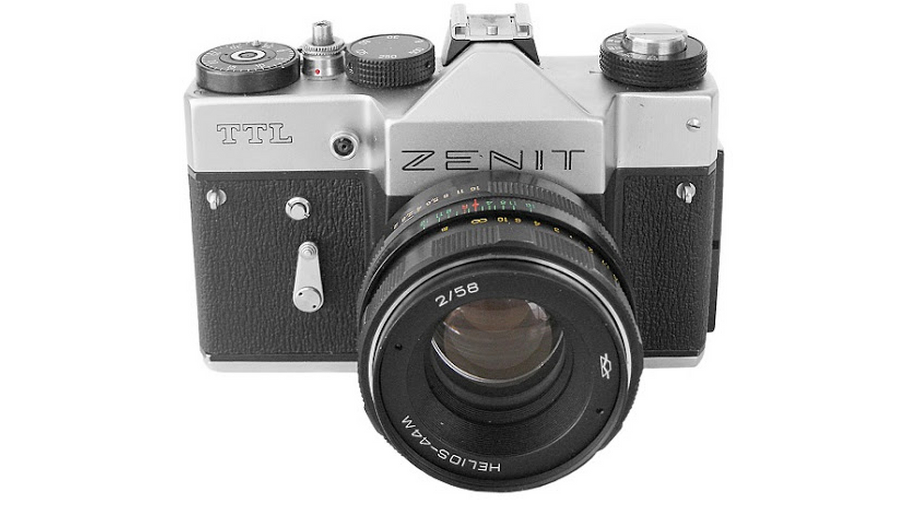
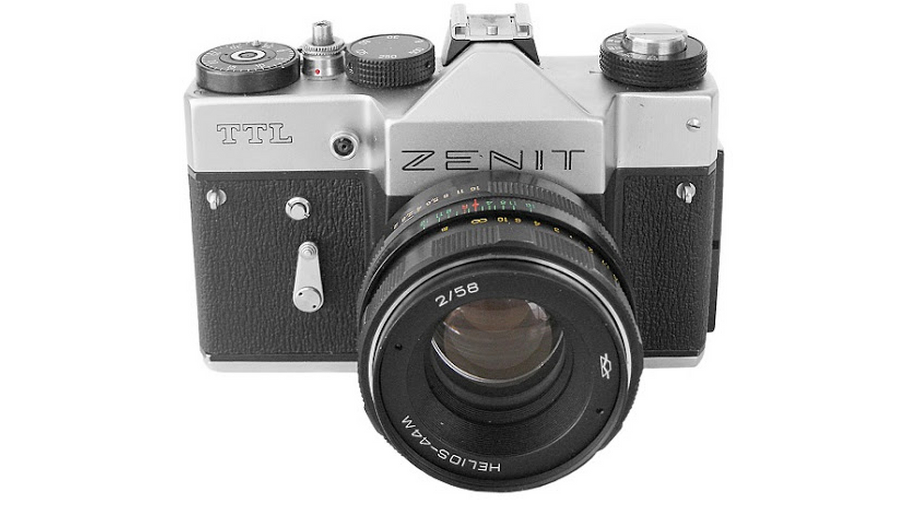
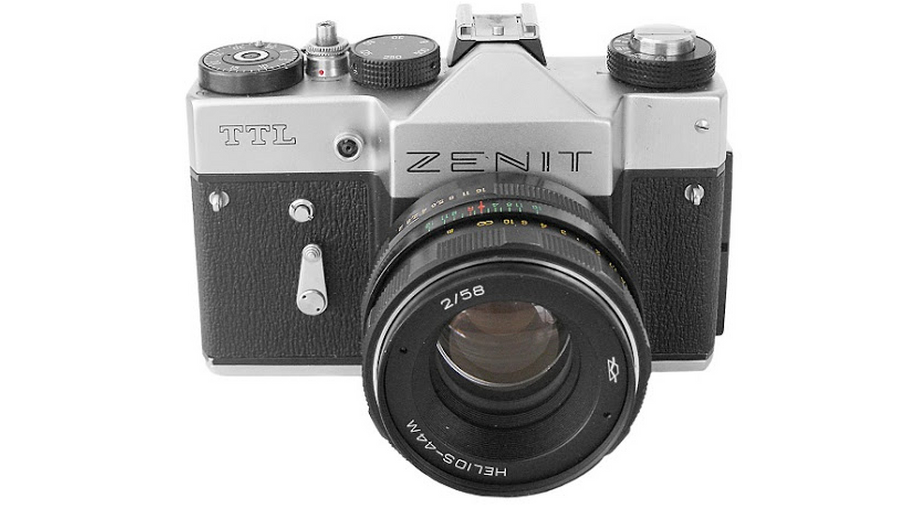

Pénzes Kristóf vagyok, jelenleg a Budapesti Műszaki- és Gazdaságtudományi Egyetem első éves hallgatója, gépészmérnök szakon. A fotózás, azon belül is az analóg fotók készítése a hobbim.
Az első Szovjet analóg gépemet a nagyszüleimtől kaptam. Kezembe véve egyből hatalmába kerített az analóg
fotózás világa! Pótolhatatlan érzés mikor egy retro "vasat" a szemed elé emelsz és felfedezheted a benne és
benned rejlő lehetőségeket.
Aki csak a digitális technikát ismeri és az automata expozíciós üzemmódot használja annak sajnos kimarad az
életéből az az érzés, amikor befűzi a gépébe a nyersanyagot és maximum 24-36 képkocka áll rendelkezésére,
hogy megvalósíthassa az elképzeléseit.
Itt nem működik az a módszer, hogy "lövünk" 100 képet és 1-2 majd jó lesz belőle a többit törlöm, hiszen az
LCD
kijelzőn
látom, hogy mit fotóztam...
A filmes fotózásnál ki kell várni azt a folyamatot, amely az expozíciótól indul és addig a pontig tart amíg
kezemben
tarthatom a nagyított papírképet.
A negatívok örök életűek!
Jelenleg 2 analóg gépem van egy Smena 8M illetve egy Smena Symbol.
Nagyrészt történelmi helyeket szoktam fotózni, de kifejezetten szeretek különböző életképeket is
megörökíteni.
Ami a jövőt illeti, szeretnék az analóg fényképezés világában maradni, meglévő két fényképezőgépem mellé szeretnék egy Zenit 12XP és/vagy egy Zenit TTL szintén analóg fényképezőgépet, mivel ezek a gépek cserélhető objektívvel rendelkeznek, de még mindig a szovjet vonalat képviselik. Fontosnak tartom ezt a fejlesztést, mivel ezáltal rengeteg új lehetőség nyílik meg előttem.
